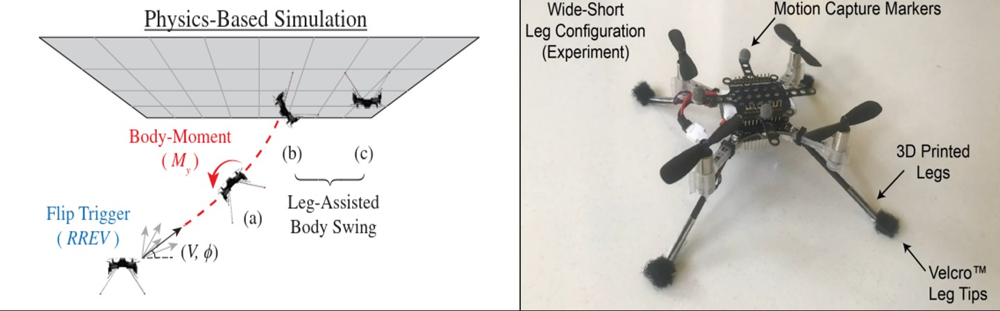
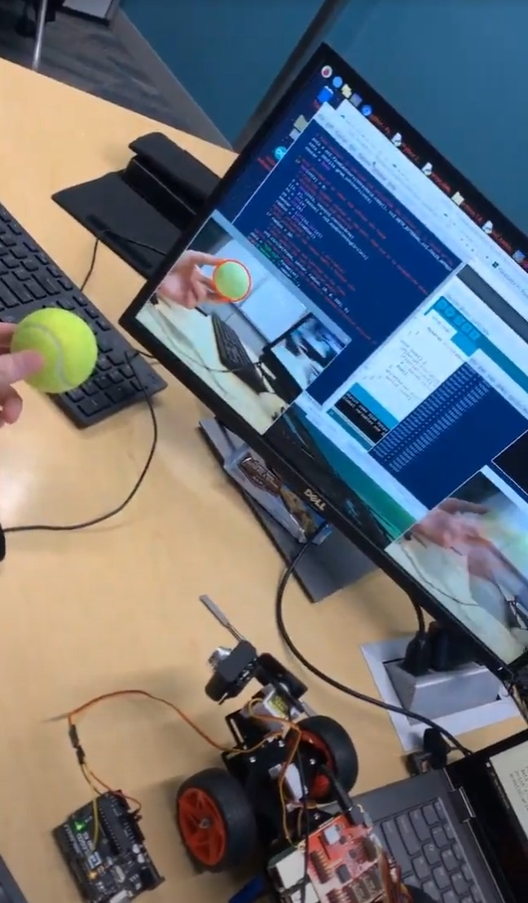
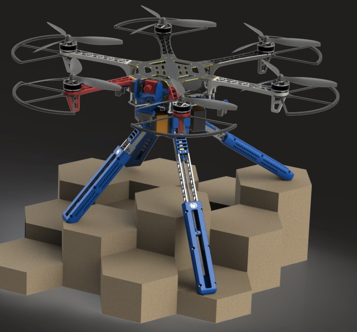
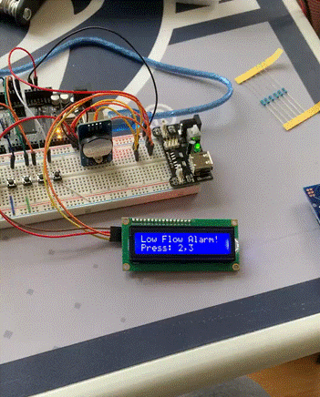
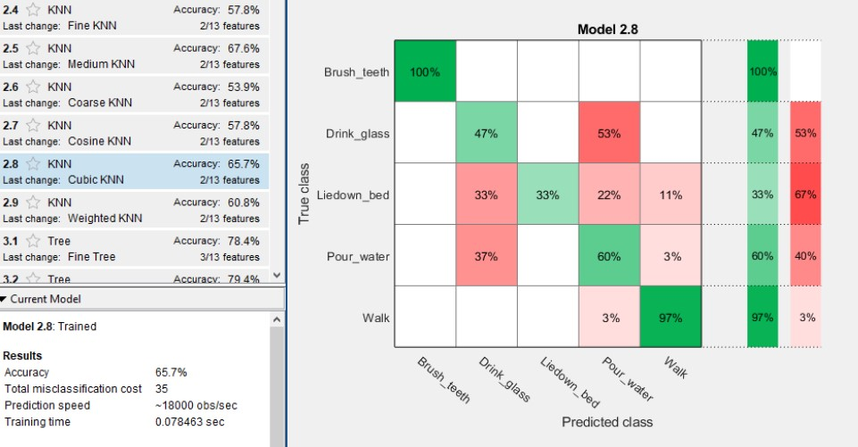

My masters thesis work
Recently I finished my Master's of Science in Mechanical Engineering at the Pennsylvania State University. While there, I
worked on a team in the Bio-Inspired Robotics lab headed by Dr. Bo Cheng. Within this lab I was part of the fly group
where we worked towards implementing and inverted landing strategy for a nano-quadcopter. My focus was on removing the
reliance of external positioning for the micro UAV by utilizing bio-inspired visual cues. As I worked through this project
I learned many valuable skills in the realm of control theory and software development, such as expanding my capabilities
with object oriented programming (Python 3 and C++ 11). As well as experimentation with analytical modeling in a real time
physics simulation (ROS and Gazebo).


The Automated Rescue Robot competition took place during my second semester of my masters program and the goal was to
navigate a maze like environment while collection tennis balls along the way. With the help of my two other lab mates
we were able to take first place!
During this project we learned about the fundamentals of computer vision with the help of OpenCV and how to
utilize those outputs and feed them into a PID loop enabling us to keep track of the robot's position with respect to the
tennis balls.

During my senior year of undergrad I got to work with a bright group of fellow mechanical engineers and two electrical
engineers. For this project we were tasked by Boeing to construct a UAV that can carry a payload with medical aid coupled
with the ability to land on uneven terrain. In order to complete this task we were given a budget of $2,000 of which we only
used $642 while still being able to pass all of Boeing's requirements. Working with this team was so much fun because it was
the first project where we got to work with other disciplines. All of our skills were spread rather evenly for the needs of
this project which allowed us to complete a significant amount of work in just a single semester. Everything from design ideas
part selection and finally flight tests as well as FEA analysis of the landing gear. Because of all of the hard work my team and
I put in this is probably the project I am most proud of being able to have worked on it so please read up more as we have documented
everything to Boeing's standards!

For this project I was asked by one of my bosses at my current workplace to help with the initial stages of a research project with
the aim of quantifying if there was a medical bias with the distribution of Ventricular Assistive devices. Throughout this project the
requirements were rapidly changing as the information was distilled from the end user (Doctors from Maine Medical Center) to me. Therefore,
in order to fulfill these metrics I needed to be able to rapidly change hardware and software capabilities of the device. Ultimately, it
taught me several valuable skills, from interfacing with external storage using the SPI communication protocol, configuring a real time clock
using I2C to keep precise records from user input, to programming a user interface in C.

In order to interface and complete several tasks with the Braccio robot arm I needed to first finish several classes in order to back up the
software development.

Originally I was never going to be assigned this project and before it was I was rather bummed because my favorite in person lab, the controls
lab, was going to be online. However, thankfully my professor for this class was extremely flexible and assigned a well thought out machine learning
project that taught us the fundamentals of machine learning. The project consisted of first educating us on the math behind what powers ML, then assigning
us groups in order to collect as much data as we could from an accelerometer attached to our wrists. Finally we would then parse through that data in attempts
to classify what action the user was doing, similar to how smart watches classify specific actions.